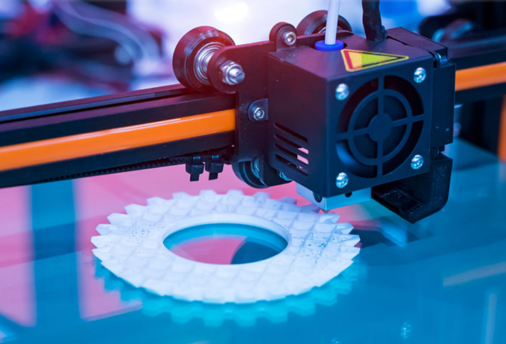

Nuestras Herramientas
Combinamos el diseño asistido por ordenador con maquinaria de última generación para materializar los proyectos de nuestros alumnos.
Software de Diseño:
Tinkercad
SketchUp
FreeCAD
Cura Slicer
LaserGRBL
Maquinaria del Taller:
Impresora FDM
Cortadora Láser
Fresadora CNC

Impresora 3D FDM
Impresión FDM
Creación de piezas en PLA y materiales técnicos para estructuras y carcasas de robots.
Corte Láser
Mecanizado de precisión en madera, acrílicos y metales blandos para proyectos de gran escala.
Fresado CNC
Mecanizado de precisión en metales y materiales duros para piezas técnicas. Prototipado de placas de cobre para circuitos electrónicos personalizados.